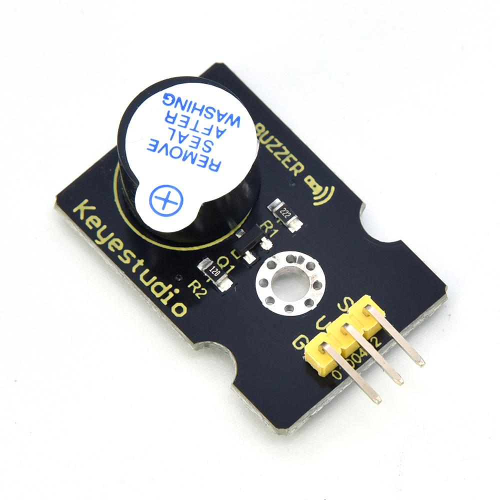
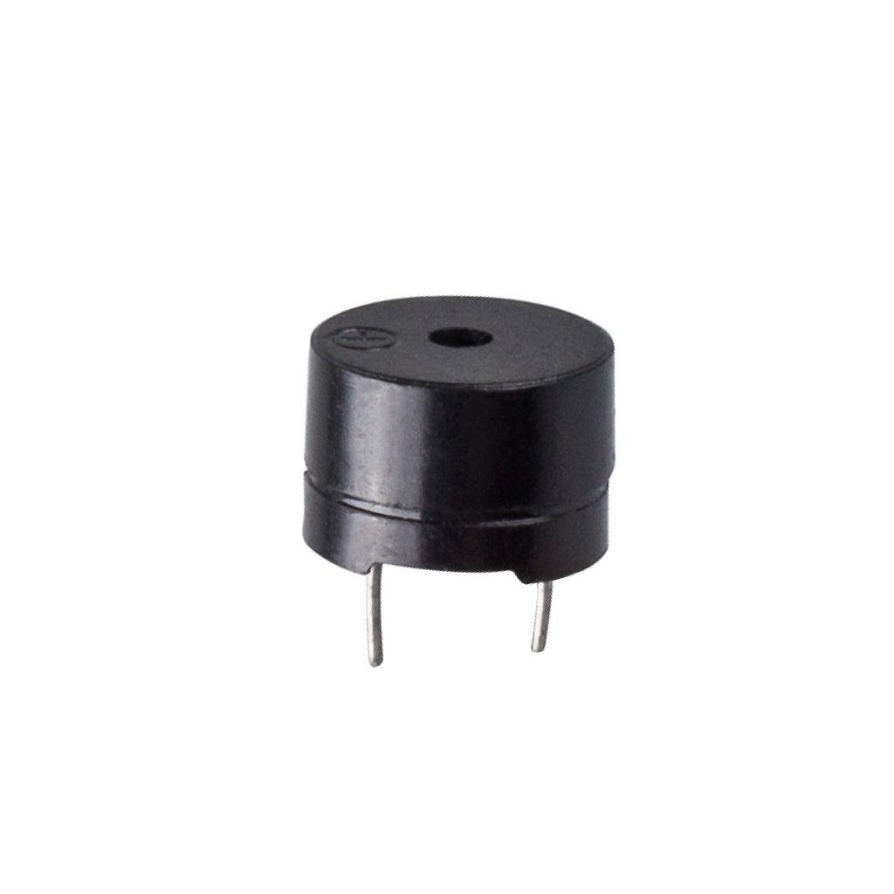

4. El Buzzer (o zumbador)
Un buzzer o zumbador es un pequeño dispositivo electrónico capaz de producir sonidos. En robótica podemos utilizarlo para generar alarmas, avisos, señales acústicas e incluso melodías.
Por ejemplo, podemos programar nuestro robot para que emita un pitido cuando detecte un obstáculo a menos de 20 cm.
4.1. ¿Qué tipos de buzzer existen?
Lo primero que debemos saber es que no todos los buzzers se controlan igual.
4.1.1. Buzzer activo y pasivo

Buzzer activo
Incorpora un oscilador que genera el sonido. Normalmente basta con activar su alimentación para que emita un pitido de frecuencia fija.
En MicroPython podemos controlarlo con
machine.Pin, siempre que sea compatible
eléctricamente con el GPIO.

Buzzer pasivo
Necesita recibir una señal periódica para generar sonido. Podemos modificar la frecuencia de esa señal para producir distintas notas.
En MicroPython lo controlamos normalmente
con machine.PWM.